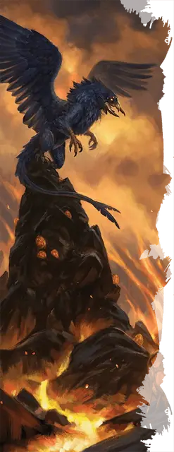

Глубинный ворон
Deep Crow
Большой Монстр, без мировоззрения

Класс Доспеха 17 (природный доспех)
Хиты 133 (14к10 + 56)
Скорость 20 футов, летая 80 футов
| мод | спас | ||
|---|---|---|---|
| СИЛ | 20 | +5 | +5 |
| ЛОВ | 16 | +3 | +3 |
| ТЕЛ | 18 | +4 | +8 |
| мод | спас | ||
|---|---|---|---|
| ИНТ | 8 | −1 | −1 |
| МДР | 15 | +2 | +6 |
| ХАР | 14 | +2 | +2 |
Навыки Восприятие +6, Скрытность +11
Чувства слепое зрение 30 футов, тёмное зрение 120 футов, пассивное Восприятие 16
Языки Язык Глубинных воронов
Опасность 9 (5000 опыта)
Бонус мастерства +4
Особенности
Сопротивление магии. Глубинный ворон совершает с преимуществом спасброски от заклинаний и прочих магических эффектов.
Скрытность в тенях. Находясь в тусклом освещении или во тьме, глубинный ворон может совершить действие Засада бонусным действием.
Чувствительность к солнечному свету. Находясь на солнечном свете, глубинный ворон совершает броски атаки и проверки Мудрости (Восприятие), которые зависят от зрения, с помехой.
Действия
Мультиатака. Глубинный ворон совершает три атаки: одну своими Мандибулами и две Когтями.
Мандибулы. . Рукопашная атака оружием: +9 к попаданию, досягаемость 10 футов, одна цель. Попадание: 16 (2к10 + 5) колющего урона, и цель схвачена (Сл высвобождения 17). Пока этот захват не закончится, цель опутана, и глубинный ворон не может использовать свои мандибулы против другой цели.
Коготь. . Рукопашная атака оружием: +9 к попаданию, досягаемость 5 футов, одна цель. Попадание: 12 (2к6 + 5) рубящего урона.
Описание
Единственное предупреждение, которое вы получите - это устрашающее далекое карканье, эхом отдающееся из темноты, как похоронный звон. Потому что к тому времени, когда эти пылающие красные глаза остановятся на тебе, бежать будет уже слишком поздно...
Некоторые искатели приключений и мудрецы сплетничают, что глубоководные вороны были впервые порождены как фамильяры злых заклинателей, заброшенных в подземные глубины и оставленных расти до огромных размеров. Другие утверждают, что эти существа когда-то были обычными воронами, преобразованными мерзкой сущностью и еще более мерзкими силами. Но в одном все сходятся во мнении, что стать пищей для одного из этих монстров - слишком реальная угроза для тех, кто натыкается на их смертоносные логова.
Хотя глубинный ворон больше всего напоминает увеличенную версию своей одноименной птицы, это существо представляет собой уникальную форму птичьего насекомого. При ближайшем рассмотрении его можно легко отличить от любой другой гигантской птицы по его насекомоподобной пасти, лапам с четырьмя когтями и скоплению красных глаз, которые являются самой зловещей частью его внешности.
Кошмар с небес. Самая страшная атака глубинного ворона - это укус его мандибулами, которые могут схватить и удержать практически любое существо. Их предпочтительная атака - "хватай и улетай", при которой глубинный ворон улетает с ещё живой жертвой, прежде чем у её товарищей появится хоть какой-то шанс контратаковать. При условии, что обреченная добыча не сопротивляется, глубинный ворон забирает ее обратно в свое логово, чтобы съесть на досуге. Существа, которые сопротивляются, могут быть неоднократно сброшены с высоты, чтобы немного смягчить их.
Семейные узы. Глубинные вороны живут в одиночестве неизвестное количество лет, выходя из логова только для охоты, поиска потенциальных угроз и спаривания. Спаривание - это единственный в жизни порыв, при котором каждый глубокий ворон, участвующий в спаривании, производит скопление из четырех-восьми яиц. Инкубация длится год, за которым следует год, в течение которого птенцы глубинных ворон остаются рядом со своими родителями. После чего детеныши отправились устраивать свои собственные логова.
Неизвестный и непостижимый. Образ мыслей этих разумных, но чуждых существ остается загадкой, но некоторые, кто сталкивался с ними, рассказывают, что они быстро затаивают обиду. В течение многих лет. Что еще более важно, они могут научить своих птенцов питать те же обиды, прививая ненависть между поколениями к избранным врагам, которая может длиться веками.
Логово глубинного ворона. Глубинные вороны и древние глубинные вороны гнездятся в местах как глубоких, так и теплых, предпочитая места с доступом к открытой лаве. Вершины из вулканической породы, которые существа ценят как насесты, часто встречаются в таких местах, чье окружающее тепло обеспечивает постоянную поддержание температуры яиц этих существ.